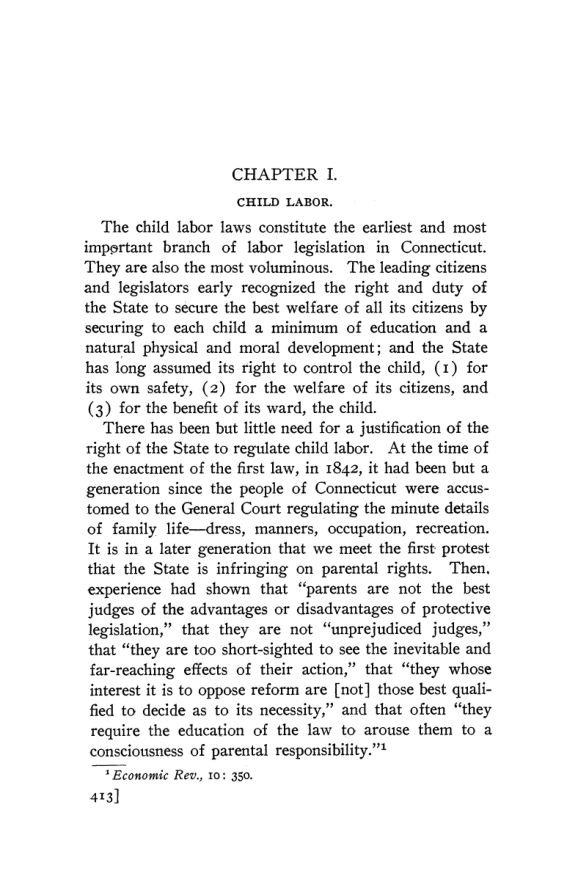

Edwards, 1907: as leis do trabalho em Connecticut, de 1650 a 1906
Leitura: 11 min
Em 1907, Alba M. Edwards reconstituiu as leis do trabalho de Connecticut: trabalho infantil, jornada, salários, greves, inspeção de fábricas e a distância entre o que a lei dizia e o que se cumpria.


Um agente do Conselho Estadual de Educação de Connecticut chamou quinze crianças numa fiação. Todas tinham certificado de idade assinado pelos pais, como a lei de 1886 permitia quando não havia registro de nascimento no cartório da cidade. O agente perguntou ao gerente quantas tinham de fato a idade declarada. A resposta, contada ao autor:
“Nenhuma, diabos. Minhas ordens são manter a fábrica rodando.” (“Not a d——d one of them. My orders are to keep the mill running.”)
The Labor Legislation of Connecticut, de Alba M. Edwards, saiu em 1907 como o nº 3 do vol. 8 da terceira série das Publications of the American Economic Association. O próprio texto se apresenta como tese. Em treze capítulos, Edwards segue cada lei desde a primeira versão até a revisão de 1902, com base em relatórios oficiais, jornais, decisões judiciais e entrevistas com agentes, patrões e trabalhadores.
Como começou a lei do trabalho infantil?
O código de 1650 mandava pais e mestres ensinar filhos e aprendizes a ler e criá-los em algum ofício honesto; um trecho dele ainda constava da revisão de 1902. Uma lei de 1813 exigia que os donos de fábricas ensinassem as crianças empregadas a ler, escrever e fazer as quatro operações. Nenhuma das duas era aplicada: em 1842, a comissão de escolas relatou uma fábrica com 24 crianças que não sabiam escrever o próprio nome.
A primeira lei de trabalho infantil propriamente dita é de 1842: menor de 15 anos só podia ser empregado se tivesse frequentado a escola três meses no ano anterior, e menor de 14 não podia trabalhar mais de dez horas por dia em fábrica de algodão ou lã. Seguiram-se as leis de 1855 (idade mínima de nove anos), 1856 (dez anos) e 1867 (dez horas por dia e 58 por semana para menores de 15). A fiscalização ficava com visitadores escolares, condestáveis e grand jurors, sem pagamento extra. Um visitador escolar resumiu a situação em 1866:
“Se eu tentasse aplicar a lei atual, este vilarejo ficaria quente demais para mim.” (“If I were to attempt to execute the present law, this village would be too hot to hold me.”)
O que mudou a partir de 1869?
Em 1869, o Conselho Estadual de Educação ganhou poder para aplicar a lei e nomear um agente pago. Edwards marca aí o início do segundo período: pela primeira vez havia um funcionário cuja única tarefa era fiscalizar. Um acordo com os fabricantes para mandar as crianças à escola em turnos durou pouco. Em 1875, 332 de 500 fábricas investigadas empregavam menores de 14 anos, num total de 2.292 crianças.
A lei de 1886 fixou a idade mínima de 13 anos em estabelecimentos mecânicos, comerciais e industriais, com multa de US$ 60 por semana de infração. Foi um meio-termo: o Conselho de Educação queria 12 anos, os Knights of Labor queriam 14. No Senado houve três votos contra; na Câmara, um. A idade mínima subiu para 14 anos em 1895.
Seguiram-se ajustes: em 1899, frequência escolar obrigatória dos 7 aos 16 anos e proibição de empregar menor de 14 durante o horário escolar; em 1901, certificado de idade obrigatório para todo empregado com menos de 16; em 1903 e 1905, poder para manter na escola o adolescente de 14 a 16 anos sem instrução suficiente. Um único agente chegou a cobrir 40 cidades, 700 professores e 30 mil alunos. O autor atribui boa parte das dificuldades de fiscalização à grande população imigrante, sobretudo franco-canadense e, mais tarde, italiana.
O capítulo inclui o relatório de W. B. Ferguson, superintendente de escolas de Middletown, sobre a investigação de 1906, que Edwards chama de a única investigação minuciosa já feita numa cidade fabril do estado. O recenseamento escolar havia contado 10 crianças italianas de 14 a 16 anos; a investigação encontrou 49. Das 42 mandadas à escola, 38 saíram das fábricas. Pelos censos federais, a participação de crianças no emprego industrial caiu de forma abrupta entre 1880 e 1890, o que Edwards credita à lei de 1886. Em 1900, os menores de 16 eram cerca de 2% dos empregados da indústria.
A lei encurtou a jornada?
Em 1867, o movimento pelas oito horas conseguiu uma lei que declarava oito horas a jornada legal, “salvo acordo em contrário” entre as partes. Segundo o Bureau of Labor Statistics, em 1874, ela não teve efeito algum. A lei de 1887 limitou a dez horas por dia e 60 por semana o trabalho de mulheres e menores de 16 anos em fábricas e lojas, mas aceitava como prova conclusiva o certificado de idade feito pelo próprio menor. Edwards diz não ter encontrado um único processo com base nela.
“O costume estabeleceu a jornada de dez horas antes que ela aparecesse em nossas leis.” (“Custom established the ten hour working day before it appeared on our statutes.”)
A segunda metade do capítulo trata dos efeitos econômicos das restrições ao trabalho de mulheres e crianças, sobretudo a concorrência das fiações do Sul. Para Edwards, a única vantagem permanente importante do Sul era a proximidade do algodão. Em Connecticut, o número de fusos cresceu 7,1% de 1890 a 1900. Em 1900, a indústria do algodão respondia por cerca de 6% da indústria do estado, mas por 26,8% das crianças com menos de 16 anos empregadas.
O que a lei dizia sobre contrato, salário e greve?
O capítulo III reúne as leis sobre o contrato de trabalho: a de 1867, que pune o patrão que tenta influenciar o voto do empregado; a de 1899, que proíbe obrigar o empregado a prometer não se sindicalizar; a “padrone law” de 1895, que criou intérpretes para informar trabalhadores estrangeiros de seus direitos; e a lei de 1901 sobre a responsabilidade do empregador, que Edwards descreve como meia medida, por apenas codificar princípios da common law. O capítulo IV trata do salário: crédito preferencial do trabalhador na insolvência desde 1828, proibição de descontar o salário pago antes do dia de pagamento em 1886 e pagamento semanal obrigatório em 1887.
O capítulo V acompanha as leis contra a intimidação, de 1864 a 1878, e dois processos de conspiração: o caso Glidden, de 1886, sobre um boicote a uma editora de jornal, e o caso dos carroceiros, julgado em 1904. Edwards conclui que, em quase vinte anos, a visão da Suprema Corte do estado sobre o que constituía conspiração criminosa não mudou. A lista negra foi proibida em 1897.
Que instituições o estado criou?
Os capítulos VI a X tratam de cinco experiências. Em 1901, o estado abriu agências públicas e gratuitas de emprego em New Haven, Hartford, Bridgeport, Norwich e Waterbury, com teto de US$ 2 mil por ano cada, e passou a licenciar as agências privadas, limitando a taxa a US$ 2. O conselho estadual de mediação e arbitragem de 1895, com três membros, foi chamado uma única vez em 1896, sem acordo. O capítulo VIII trata da lei do selo sindical, de 1893.
A lei de licença para barbeiros, de 1901, é o único caso em que Connecticut exigiu licença de um trabalhador para exercer o ofício. Para estudá-la, Edwards entrevistou barbeiros em cerca de 150 barbearias; descreve a lei como obtida pelos sindicatos de barbeiros para afastar a concorrência de barbeiros itinerantes, de egressos de escolas de seis semanas e das barbearias de cinco centavos. O capítulo X conta a história do trabalho de presos desde a prisão estadual de Wethersfield, aberta em 1827, e do sistema de contratos com empresas privadas.
Como surgiu a inspeção de fábricas?
A campanha começou com os Knights of Labor em 1885. O principal opositor citado é o próprio comissário do Bureau, A. T. Hadley, que em 1885 defendeu aumentar a responsabilidade do empregador por acidentes em vez de criar inspeção estatal. A lei de 1887, quase cópia da de Massachusetts, criou um inspetor nomeado pelo governador, com salário de US$ 1.500, poder de exigir proteção em correias, engrenagens e poços de elevador, e multas de US$ 50 a US$ 500. Quando Edwards escrevia, havia três inspetores adjuntos além do chefe. O capítulo trata ainda das leis sobre saídas de incêndio (1883), assentos para empregadas (1893), inspeção de padarias (1897) e oficinas em cortiços (1899).
Quem fez essas leis?
No capítulo final, Edwards resume: a legislação de Connecticut esteve cerca de dez anos atrás da de Nova York e Massachusetts, muitas vezes copiada de outros estados, sem conhecimento das condições locais e sem órgão para aplicá-la. A partir de 1885, o motor foram os sindicatos. A legislatura de 1885-86 tinha 37 membros dos Knights of Labor; um dirigente da ordem calculava no máximo 8 mil membros estáveis em 1886, quando a estimativa corrente era de 60 mil. Para Edwards, a lei do trabalho infantil de 1886, as leis de pagamento semanal, a inspeção de fábricas e a lei das padarias tiveram efeito claro; a maior necessidade, conclui, é revisar as leis existentes e aplicá-las com cuidado.
Na minha leitura
Na minha leitura, a contribuição de método está em separar a lei escrita da lei aplicada. Edwards não para no texto legal: pergunta quem fiscaliza, com que orçamento e com que prova. Daí as melhores passagens econômicas do livro, sobre o desenho dos certificados. Quando o certificado de idade é emitido por quem ganha com o trabalho da criança, pais ou o próprio menor, a lei vira formalidade. Quando a fiscalização cabe a funcionários locais sem remuneração, ela simplesmente não acontece. O problema é de incentivos, não de redação.
O segundo ponto, na minha leitura, é a causalidade. As próprias tabelas mostram que a jornada de dez horas já era a regra em 1880, antes da lei de 1887, e que nos têxteis ela continuou sendo descumprida depois. A lei, nesse caso, seguiu o costume. Já a queda do trabalho infantil entre 1880 e 1890 coincide com a lei de 1886 e com agentes pagos. A comparação entre os dois casos sugere uma regra útil: a lei pesa mais quando vem acompanhada de quem a aplique.
Glossário
- Knights of Labor
- organização nacional de trabalhadores, forte nos Estados Unidos na década de 1880.
- Grand juror
- membro do júri de acusação; em Connecticut, encarregado de apresentar denúncias de infrações locais.
- Common law
- direito formado pelas decisões dos tribunais, e não por leis escritas.
- Regra do colega de trabalho (fellow-servant rule)
- doutrina pela qual o patrão não responde por acidente causado por negligência de outro empregado.
- Padrone
- intermediário que trazia grupos de imigrantes e negociava seus salários e pagamentos.
- Lista negra (blacklisting)
- troca de nomes de empregados entre patrões para impedir sua contratação.
- Selo sindical (union label)
- marca aplicada a produtos para certificar que foram feitos por trabalhadores sindicalizados.
- Sistema de contratos (contract system)
- arranjo em que o Estado aluga o trabalho dos presos a empresas privadas.
- Oficina em cortiço (tenement house workshop)
- produção de roupas e outros artigos dentro de moradias coletivas.
Fontes
- The Labor Legislation of Connecticut (pp. 1–322). JSTOR · Internet Archive (PDF)
- Sumário da edição no JSTOR: Publications of the American Economic Association, 3ª série, vol. 8, nº 3.
Documento em domínio público (EUA, publicado antes de 1931), via JSTOR Early Journal Content e Internet Archive. Resumo e comentário do autor deste site, sem afiliação com a American Economic Association. Encontrou um erro? Escreva: a correção é publicada no próprio texto, com data.
← Nº 84 · O manual de 1907: 1.040 sócios e um boletim a caminho Nº 86 · Watkins, 1907: de onde vêm as grandes fortunas →